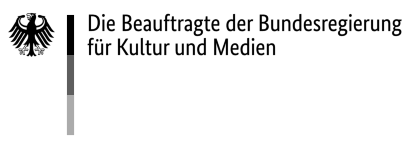

Amazonia Future Lab
This is a pilot project based on objects from multiple collections, aiming to overcome disciplinary, institutional and spatial boundaries and to create digital and analog spaces of networking, mutual understanding and mediation. The things stored in the deposit cabinets of museums and the stacks of libraries and archives are more than silent witnesses of appropriation, circulation and reinterpretation. In each of them, relationships between people, plants, ancestors, and other beings as well as territories materialize. Even in their momentary status as objects of collecting institutions, they have the potential to connect different life-worlds, forms of knowledge and knowledge practices, and thereby to return to life itself – a life that transcends the walls of collecting institutions. This endeavor requires the development of novel formats and tools.
Approaches
The general aim of the project is to use the potential of digital formats and tools to communicate, exchange, network and jointly create new knowledge from different perspectives, knowledge practices and social contexts. The connected knowledge will be publicly accessible in its processuality, via interactive formats of exploration and participation. The tools created will subsequently be made freely available and can thus be used or further developed by other communities and institutions that are engaged in the field of participatory cultural education. The ambition is to devise visualization prototypes for three complementary approaches to cultural knowledge: workbench, wanderer mode, and wonderwall. Each of these modes represents a central goal of the project: connection, comprehension, and communication.
- Workbench: integrate different databases and enable semantic linking of collections
- Wanderer Mode: enable curious and open explorations, specific search queries as well as saving and sharing search profiles
- Wonderwall: offer a visual and sensual access to the data, networks and exploration patterns
Background
“Amazonia Future Lab” aims at addressing these weak spots and working on solutions that can both accommodate the views of indigenous cultures, and do justice to the complex connections entailed in their knowledge systems.
The lessons learned, along with a broad network of institutional and local partners, represent a unique opportunity to build up the collaborative processes that are fundamental to this research—for instance, through the long cooperation history of the Museu Nacional with indigenous researchers in Brazil. By moving away from strictly disciplinary, museum-centered views of biocultural artifacts, we create better conditions to develop tools that can promote a holistic approach to museum collections. Our goal is hence to extend and intensify the work initiated with “Sharing Knowledge”, as well as to tackle central challenges of multiperspectivity and decolonization of knowledge production.
Publications & Events
Amazonia Future Lab, Workshop at re:publica 2022, Fidel Thomet, Patricia Rahemipour, Ute Marxreiter, Giacomo Nanni, 10.06.2022
Partners
The Ethnologisches Museum (Ethnological Museum) evolved from the collections of the royal cabinets of art and since its foundation in 1873 has become one of the largest and most significant collections of its kind worldwide. The museum's holdings comprise approximately 500,000 ethnographic, archaeological and historical-cultural objects from Africa, Asia, America and Oceania. They are complemented by some 500,000 media (ethnological photographs, films, audio recordings) and about 200,000 pages of written documents. Many of its collections are among the most extensive and valuable in existence.
Dr. Andrea Scholz, Curator for transcultural cooperation
Dr. Thiago da Costa Oliveira, Research Fellow
Flavia Heins, Research Associate
Ute Marxreiter, Research Associate
The UCLAB at Fachhochschule Potsdam is an interdisciplinary visualization research group situated between design, computing, and the humanities. Our work revolves around information visualization with a particular focus on the challenges and questions arising from social, cultural, and technological transformations. Our mission is to make sense of comprehensive datasets and complex issues by developing creative and critical approaches to visualization. All our research is collaborative in nature. The lab itself is a collaboration between the Department of Design and the Institute for Urban Futures. At the junction of design teaching and visualization research, we strive to have an impact in both academia and the world of practice.
Prof. Dr. Marian Dörk, Research Professor
Fidel Thomet, Research Associate
Nadia Zeissig, Research Associate
Giacomo Nanni, Research Associate
The Botanic Garden and Botanical Museum Berlin (BGBM) is a so-called Zentraleinrichtung (central unit) of Freie Universität Berlin. Today with 20,000 different species of plants on 43 hectares the Botanic Garden has become one of the largest and most diverse botanical gardens in the world.
Prof. Dr. Thomas Borsch, Director
Anton Güntsch, Director, Center for Biodiversity Informatics and Collection Data Integration (ZBS)
The Ibero-Amerikanisches Institut (IAI, Ibero-American Institute) is an interdisciplinary center for academic and cultural exchange between Germany and Latin America, the Caribbean, Spain and Portugal. It is home to the largest specialist library in Europe for the Ibero-American region. It is also a place of knowledge production, exchange and cultural translation. Combining an information center, a research center and a cultural center, the IAI is both a platform for cooperation and a catalyst for intercultural and transcultural dialog.
Prof. Dr. Barbara Göbel, Director
Ralf Ullrich, Research Associate
Christoph Müller, Research Associate
The Institut für Museumsforschung (Institute for Museum Research) is the research and documentation centre at the Staatliche Museen zu Berlin. It carries out multidisciplinary research on all aspects of museums and their collections and offers services to museums across Germany. The scope of the institute’s work includes visitor research, digitalisation, long-term archiving, museum management, documentation, new media and education.
Dr. Patricia Rahemipour, Director
The Museu Nacional (National Museum) is Brazil’s oldest scientific institution. Internationally recognized as a center of excellence in research, the Museu Nacional develops numerous projects in various lines of research, and maintains partnerships with the main national and international centers for anthropology and natural sciences. In the area of education, the museum offers specializations, extension and post-graduation courses in several fields of knowledge, in addition to hosting temporary and permanent exhibitions and educational activities open to the general public.
Prof. Dr. Carlos Fausto, Research Professor
Prof. Dr. Maria Franco Trindade Medeiros, Research Professor
Funding
This project is funded by the Digital Culture Programme of the German Federal Cultural Foundation
